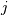
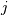

scipy.cluster.hierarchy.cophenet¶
- scipy.cluster.hierarchy.cophenet(Z, Y=None)[source]¶
Calculates the cophenetic distances between each observation in the hierarchical clustering defined by the linkage Z.
Suppose p and q are original observations in disjoint clusters s and t, respectively and s and t are joined by a direct parent cluster u. The cophenetic distance between observations i and j is simply the distance between clusters s and t.
Parameters : Z : ndarray
The hierarchical clustering encoded as an array (see linkage function).
Y : ndarray (optional)
Calculates the cophenetic correlation coefficient c of a hierarchical clustering defined by the linkage matrix Z of a set of
 observations in
observations in  dimensions. Y is the condensed distance matrix from which
Z was generated.
dimensions. Y is the condensed distance matrix from which
Z was generated.Returns : c : ndarray
The cophentic correlation distance (if y is passed).
d : ndarray
The cophenetic distance matrix in condensed form. The
 th entry is the cophenetic distance between
original observations
th entry is the cophenetic distance between
original observations  and .
and .